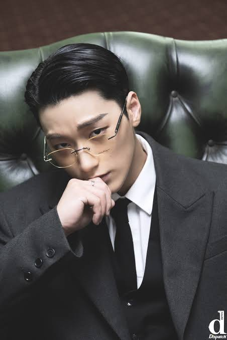
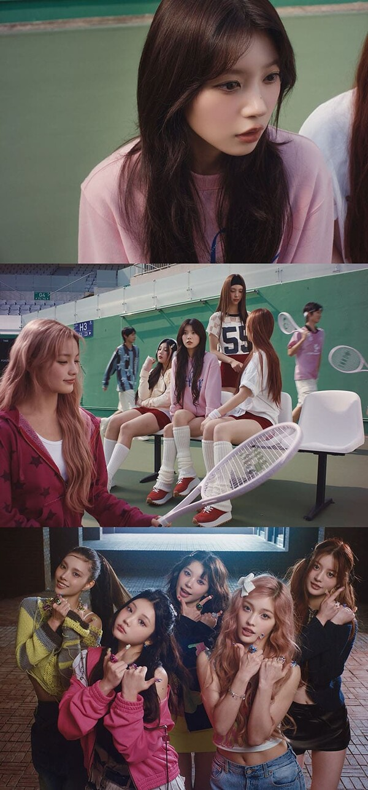
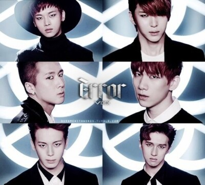
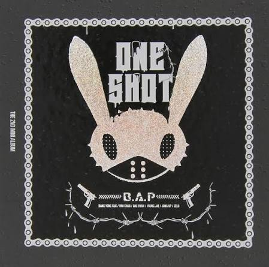
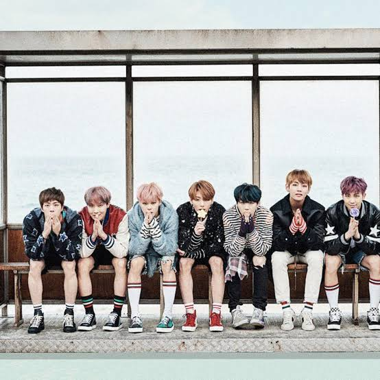

En esta sección de Hallyu-Otaku podrás encontrar información acerca de los videos musicales de tus grupos de K-pop favoritos.

"Error" de VIXX, este video presenta una trágica historia de ciencia ficción donde un hombre se transforma en cíborg para olvidar la muerte de su novia, pero termina construyendo una réplica robot con sus recuerdos. El dato curioso es que la protagonista es Heo Young-ji de KARA, quien filmó estas emotivas escenas justo después de su debut.

"One Shot" de B.A.P, la trama de este video se desarrolla como un cortometraje cinematográfico de acción y crimen organizado que involucra secuestros, tiroteos y un impactante final con doble giro argumental. Lo interesante es que costó casi 900,000 dólares en 2013 debido a que se filmó en hangares y locaciones de Filipinas y Corea del Sur.

"Spring Day" de BTS, este video funciona como una emotiva y melancólica metáfora visual que aborda el duelo, la salud mental y la esperanza de reencontrarse con los seres queridos. Detrás de su estética, destaca por incluir referencias directas al libro "Omelas" de Ursula K. Le Guin y sutiles homenajes a las víctimas de la tragedia del ferry Sewol.